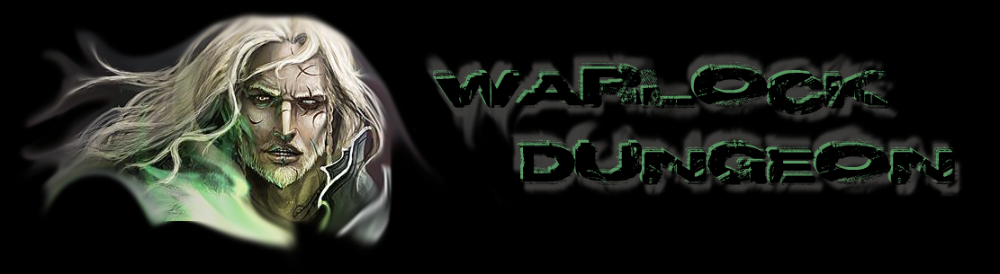

So you decided to press the donate button and see what happens. :) Seeing how the mod became more popular and more official, with the wiki-namespace and the forum child-board, I decided to throw this option in. Keep in mind that both Dwarf Fortress and the mod are completely free.While Tarn Adams/Toady One is financing himself with donations alone, I'm a freelance blogger, photographer and athlete and finance my life with sponsoring and donations as well. If, and to whom, you donate is up to you. You can find the contact info for both me and Mr. Adams below. ::: Support Toady One/Tarn Adams :::::: Support Meph (Paypal / Bank Transfer) :::Thank you, one way or the other, for supporting DF. |